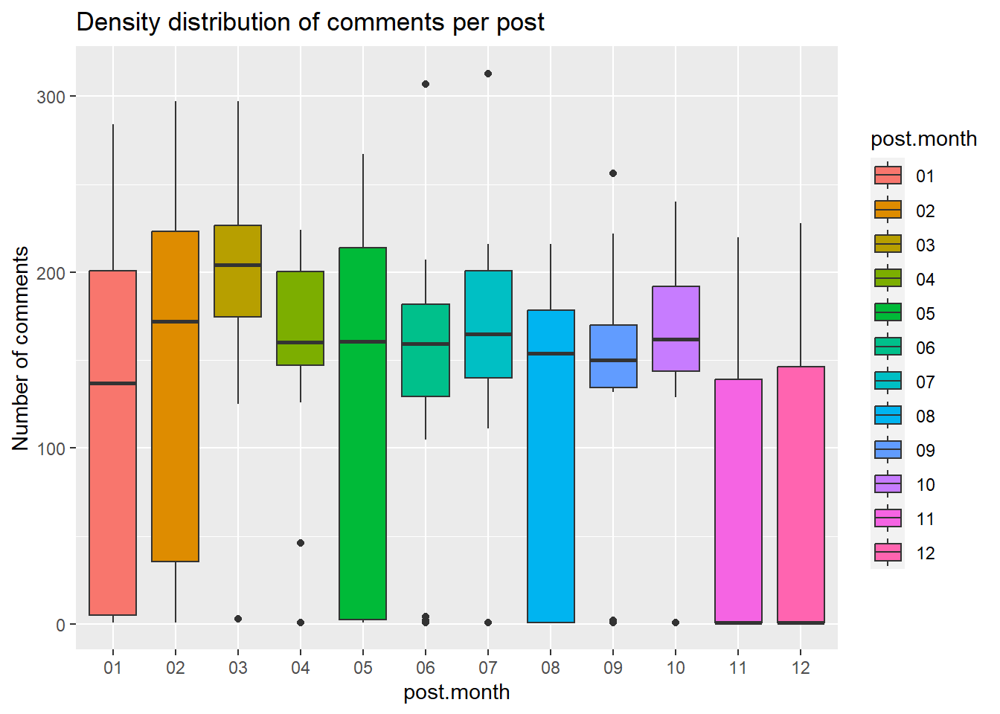

It is well known that online engagement with the web resource is a highly valuable metric and is driving site revenue. However, engagement and popularity might also be associated with other factors, that websties are trying to avoid, such as online violence, inappropriate behavior and misinformation.This research project is exploring whith factos impact readers engagement in social media conversations.
To do that I will use the data from an online blog on the news website. The author of this blog is posting weekly articles about interpersonal relationships, that are formulated as a letter to to the author, where the author gives an advice about the situation. Readers are free to comment under each post, but cannot make their own posts.
Using this data set, I will explore how engagement of readers of a news blog connected with variety of factors, such blogs’s author engagement , topic of the post, source of readers and readers inappropriate online behavior.
My research question is: Does the authors engagement in the conversation around the post makes readers more engaged and promotes positive interactions among them?
DV: My dependent construct is “user’s engagement”, I will measure users’ engagement at the level of individual post, using the following variables
L1 - page viewers View page
L2 - page readers * Reveal letter * Reveal comments
L3 - logged in * Login / sign up * Up / down vote
L4 - commenter Comment
IV: My main independent variable is Blog’s author engagement. I will measure authors engagement as the factor variable, with the following levels:
A. Unspecified comment
B. Featured comment
C. Engagement in conversation
To control for confounders, I will also measure the follwing variables:
Topic of the post (“post tag”), categorical variable.
Source of the readers, also categorical variable.
Mood of the conversation , derivative continuous variable calculated as the ratio of “likes” to “dislikes”.
Blocked and flagged comments.
Attaching package: 'dplyr'
The following objects are masked from 'package:stats':
filter, lag
The following objects are masked from 'package:base':
intersect, setdiff, setequal, union
The data for analysis contains comments of all posts for 2022.
Code
getwd()
[1] "C:/Users/Diana/OneDrive - University Of Massachusetts Medical School/Documents/R/R working directory/DACSS/603/603_Spring_2023/posts"
Code
raw <-as_tibble (read_csv("C:\\Users\\Diana\\OneDrive - University Of Massachusetts Medical School\\Documents\\R\\R working directory\\DACSS\\603\\my study files for dacss603\\globe\\LL Comment Data\\iaexport03242023nb_output.csv"))
Rows: 1810511 Columns: 16
── Column specification ────────────────────────────────────────────────────────
Delimiter: ","
chr (6): content, user_name, display_name, image_url, email, approved
dbl (6): message_id, post_id, user_id, parent, absolute_likes, absolute_dis...
lgl (3): email_verified, created_at, private_profile
dttm (1): written_at
ℹ Use `spec()` to retrieve the full column specification for this data.
ℹ Specify the column types or set `show_col_types = FALSE` to quiet this message.
ggplot(grouped, mapping =aes(x=post.month, y=n.comments, fill=post.month))+geom_boxplot() +labs(title ="Density distribution of comments per post ", y ="Number of comments" )+scale_y_continuous(breaks =seq (from=0, to=10000, by=100))

Code
# coord_flip()
This graph demonstrates significant variance in amount or comments per post over 12 months of 2022.
Dependent variable. User engagement.
My dependent construct is user’s engagement, I will measure users engagement at the level of individual post.
Engagement metrics
L1 - page viewers View page
L2 - page readers
* Reveal letter
* Reveal comments
L3 - logged in
* Login / sign up
* Up / down vote
L4 - commenter Comment
Mood of the post.
is a numerical variable.Since each comment has a certain number of “thumbs up” or “thumbs down”. I will use this variable to calculate overall “mood” of the post.
Error in geom_baoxplot(): could not find function "geom_baoxplot"
Than I visualize distribution of mood by months, nd overal variability of a mood score:
Code
ggplot(grouped, mapping =aes(x= post.month, y=mood.score))+geom_boxplot() +labs(title ="Distribution of mood by month ", y ="Post mood" )
Error in `geom_boxplot()`:
! Problem while computing aesthetics.
ℹ Error occurred in the 1st layer.
Caused by error in `FUN()`:
! object 'mood.score' not found
Code
ggplot(grouped, mapping =aes( y=mood.score))+geom_boxplot() +labs(title ="Overall mood distribution " )
Error in `geom_boxplot()`:
! Problem while computing aesthetics.
ℹ Error occurred in the 1st layer.
Caused by error in `FUN()`:
! object 'mood.score' not found
This is showing that there are
We can also check the connection between positive and negative sentiment:
Code
x.lm<-lm(pct.positive ~ pct.negative, data = grouped)
Error in eval(predvars, data, env): object 'pct.positive' not found
Code
plot ( data = grouped, pct.negative ~ pct.positive )
Error in eval(predvars, data, env): object 'pct.negative' not found
It falls perfectly on linear regression line, with positive and negative values strongly negatively correlated.
Blocked comments per post.
Now I will visualize amount of blocked comments per post:
ggplot(grouped, mapping =aes(x= post.month, y=blocked.sum))+geom_boxplot() +labs(title ="Blockeed comments per month")
Error in `geom_boxplot()`:
! Problem while computing aesthetics.
ℹ Error occurred in the 1st layer.
Caused by error in `FUN()`:
! object 'blocked.sum' not found
Blocked comments and Post mood:
Code
plot(blocked.sum ~ mood.score, data= grouped )
Error in eval(predvars, data, env): object 'blocked.sum' not found
Code
summary(grouped)
post_id n.comments post.month
Min. :27068003 Min. : 1.0 Length:383
1st Qu.:27068576 1st Qu.: 1.0 Class :character
Median :27069149 Median :149.0 Mode :character
Mean :27070403 Mean :117.5
3rd Qu.:27070634 3rd Qu.:187.0
Max. :27090293 Max. :313.0
Code
fit <-lm(blocked.sum ~ mood.score, data = grouped)
Error in eval(predvars, data, env): object 'blocked.sum' not found
Code
sum(is.na(grouped$mood.score))
Warning: Unknown or uninitialised column: `mood.score`.
[1] 0
Code
summary(fit)
Error in summary(fit): object 'fit' not found
“created_at”
This variable indicates the date of the comment. Using the range of the dates per post, I can estimate how long each post was in active discussion. Later I can compare it with the views of the same post coming from the third dataset.
Variable allowing me to connect this dataset with another one with the post informnation,
Source Code
---title: "Final Project check-in (1) "author: "Diana Rinker"description: "Final project (1)"date: "3/27/2023"format: html: toc: true code-fold: true code-copy: true code-tools: trueeditor: markdown: wrap: 72---## DACSS 603, spring 2023## Final Project check-in (1), Diana Rinker.# Online engagement "It is well known that online engagement with the web resource is a highly valuable metric and is driving site revenue. However, engagementand popularity might also be associated with other factors, thatwebsties are trying to avoid, such as online violence, inappropriatebehavior and misinformation.This research project is exploring whith factos impact readers engagementin social media conversations.To do that I will use the data from an online blog on the newswebsite. The author of this blog is posting weekly articles aboutinterpersonal relationships, that are formulated as a letter to to theauthor, where the author gives an advice about the situation. Readersare free to comment under each post, but cannot make their own posts.Using this data set, I will explore how engagement of readers of a newsblog connected with variety of factors, such blogs's author engagement ,topic of the post, source of readers and readers inappropriate onlinebehavior.My research question is: Does the authors engagement in the conversationaround the post makes readers more engaged and promotes positiveinteractions among them?**DV:** My dependent construct is **"user's engagement**", I willmeasure users' engagement at the level of individual post, using thefollowing variablesL1 - page viewers View pageL2 - page readers \* Reveal letter \* Reveal commentsL3 - logged in \* Login / sign up \* Up / down voteL4 - commenter Comment**IV:** My main independent variable is **Blog's author engagement.** Iwill measure authors engagement as the factor variable, with thefollowing levels:A. Unspecified commentB. Featured commentC. Engagement in conversationTo control for **confounders,** I will also measure the follwingvariables:1. Topic of the post ("post tag"), categorical variable.2. Source of the readers, also categorical variable.3. Mood of the conversation , derivative continuous variable calculated as the ratio of "likes" to "dislikes".4. Blocked and flagged comments.```{r, echo=F}#Loading necessary libraries: library(readxl)library(dplyr)library(ggplot2)library(tidyverse)```# DataThe data for analysis contains comments of all posts for 2022.```{r, echo=T}getwd()raw <-as_tibble (read_csv("C:\\Users\\Diana\\OneDrive - University Of Massachusetts Medical School\\Documents\\R\\R working directory\\DACSS\\603\\my study files for dacss603\\globe\\LL Comment Data\\iaexport03242023nb_output.csv"))comments.data<-raw colnames (comments.data)head(comments.data$created_at)head(comments.data$written_at)comments.data <-comments.data%>%mutate(com.year =format(written_at,format ="%Y" ))head(comments.data$com.year)dim(comments.data)comments.2022<-comments.data %>%filter(com.year =="2022" )dim(comments.2022)```To answer my research question I will need three datasets that arecoming from a different sources.- The first dataset contains comments and their attributes.- The second dataset contains posts and their attributes- The third dataset contains website analytics, such as page views, scrolls, viewers' sources and so on.To get better understanding of my data, I will review variables:### Number of comments, distributed by month```{r, echo=T}grouped<-comments.2022%>%group_by (post_id)%>%summarise(n.comments=n(), post.month =format(first(written_at),format ="%m" ))groupedggplot(grouped, mapping =aes(x=post.month, y=n.comments, fill=post.month))+geom_boxplot() +labs(title ="Density distribution of comments per post ", y ="Number of comments" )+scale_y_continuous(breaks =seq (from=0, to=10000, by=100)) # coord_flip()```This graph demonstrates significant variance in amount or comments per post over 12 months of 2022. ### Dependent variable. User engagement.My dependent construct is **user's engagement**, I will measure usersengagement at the level of individual post.Engagement metricsL1 - page viewers View pageL2 - page readers\* Reveal letter\* Reveal commentsL3 - logged in\* Login / sign up\* Up / down voteL4 - commenter Comment### Mood of the post.is a numerical variable.Since each comment has a certain number of "thumbs up" or "thumbs down". I will use this variable to calculate overall "mood" of the post.```{r, echo=T}# grouped<-comments.2022 %>%# group_by (post_id)%>%# summarise(n.comments=n(), # post.month = format(first(written_at),format = "%m" ),# likes.sum = sum(absolute_likes), # dislikes.sum=sum (absolute_dislikes))# grouped <- grouped%>%# mutate(mood = likes.sum/dislikes.sum) # grouped <- grouped %>%# mutate(mood = ifelse(is.nan(likes.sum/dislikes.sum), 0, likes.sum/dislikes.sum))# grouped<-comments.2022%>%group_by (post_id)%>%summarise(n.comments=n(), post.month =format(first(written_at),format ="%m" ),likes.sum =sum(absolute_likes), dislikes.sum=sum (absolute_dislikes),blocked.sum=sum(approved=="blocked"),pct.positive =(sum(absolute_likes)/(sum(absolute_likes)+sum(absolute_dislikes)))*100,pct.negative =-1((sum(absolute_dislikes)/(sum(absolute_likes)+sum(absolute_dislikes)))*100) )ggplot(grouped, mapping =aes( x=pct.positive))+geom_baoxplot() +labs(title ="Overall mood distribution" )```Than I visualize distribution of mood by months, nd overal variability of a mood score: ```{r, echo=T} ggplot(grouped, mapping =aes(x= post.month, y=mood.score))+geom_boxplot() +labs(title ="Distribution of mood by month ", y ="Post mood" )ggplot(grouped, mapping =aes( y=mood.score))+geom_boxplot() +labs(title ="Overall mood distribution " )```This is showing that there are We can also check the connection between positive and negative sentiment:```{r, echo=T} x.lm<-lm(pct.positive ~ pct.negative, data = grouped)plot ( data = grouped, pct.negative ~ pct.positive )```It falls perfectly on linear regression line, with positive and negative values strongly negatively correlated. ### Blocked comments per post.Now I will visualize amount of blocked comments per post: ```{r, echo=T}colnames(comments.2022)ggplot(grouped, mapping =aes(x= post.month, y=blocked.sum))+geom_boxplot() +labs(title ="Blockeed comments per month")```### Blocked comments and Post mood: ```{r, echo=T}plot(blocked.sum ~ mood.score, data= grouped )summary(grouped) fit <-lm(blocked.sum ~ mood.score, data = grouped)sum(is.na(grouped$mood.score))summary(fit)```### "created_at"This variable indicates the date of the comment. Using the range of thedates per post, I can estimate how long each post was in activediscussion. Later I can compare it with the views of the same postcoming from the third dataset.```{r, echo=T}# MG.comments<-comments.2022[grep("MeredithGoldstein", comments.2022$user_name, ignore.case = TRUE), ]comments.2022$user_name<-ifelse (is.na(comments.2022$user_name), 0, comments.2022$user_name)comments.2022$mg.comment<-ifelse (comments.2022$user_name=="MeredithGoldstein", 1, 0)dim(comments.2022)grouped<-comments.2022%>%group_by (post_id)%>%summarise(n.comments=n(), post.month =format(first(written_at),format ="%m" ),likes.sum =sum(absolute_likes), dislikes.sum=sum (absolute_dislikes),blocked.sum=sum(approved=="blocked"), pct.positive =(sum(absolute_likes)/(sum(absolute_likes)+sum(absolute_dislikes)))*100,pct.negative =(sum(absolute_dislikes)/(sum(absolute_likes)+sum(absolute_dislikes)))*100,mg.post =sum(mg.comment) )grouped<-grouped%>%mutate(mood.score = pct.positive/pct.negative) groupedclass(grouped$mg.post)ggplot(grouped, mapping =aes(mg.post))+geom_boxplot() +labs(title ="Authors comments ", y ="comments per post .per month" )grouped$mg.com<-ifelse (grouped$mg.post>0, 1, 0)grouped$mg.com <-as.factor(grouped$mg.com)ggplot(grouped, mapping =aes(y=mood.score, x=mg.com))+geom_boxplot() ```### "post_id"Variable allowing me to connect this dataset with another one with thepost informnation,